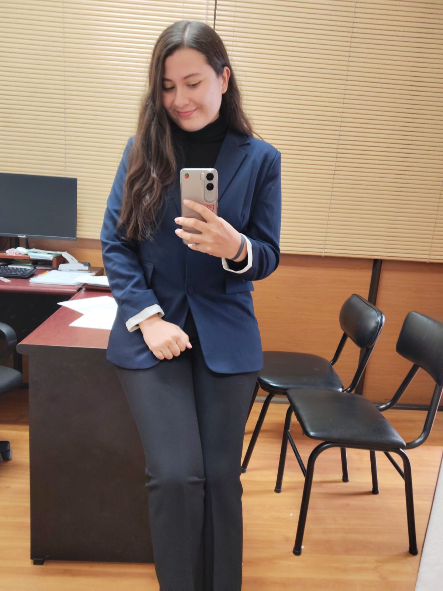
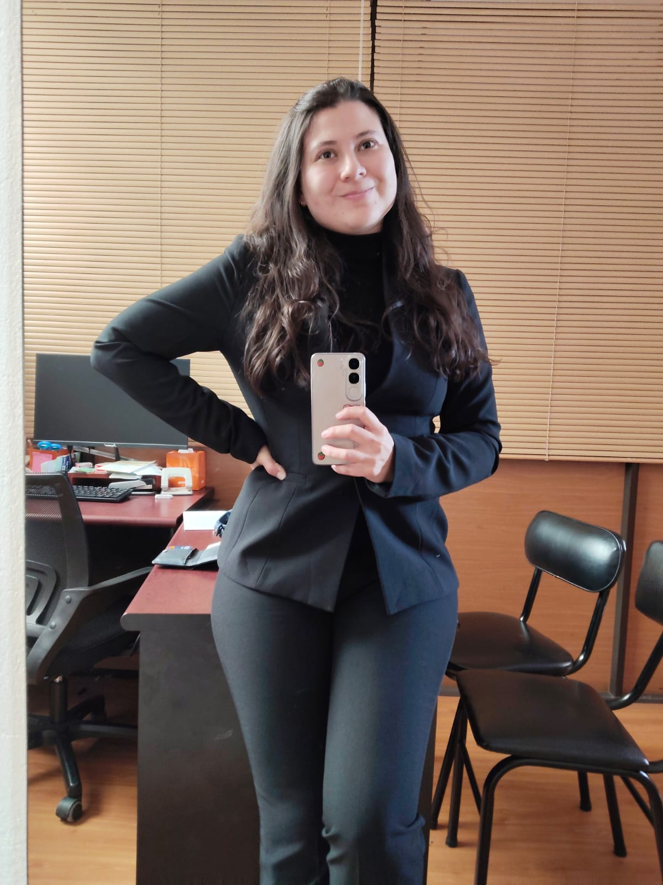

A través del diálogo, sin juicios. Acompañamiento psicológico presencial en Pasto, Nariño, y virtual para toda Colombia.


"No creo en llegar con respuestas prefabricadas. Creo en sentarme con alguien, escuchar de verdad, y construir juntos un camino que tenga sentido para su historia."
Soy psicóloga egresada de la Universidad de Nariño (2023), colegiada ante COLPSIC bajo el número 270975. Mi trabajo empezó en las aulas: fui orientadora escolar en el Instituto Champagnat durante 2025, acompañando a adolescentes y familias en momentos de crisis, decisiones difíciles y conflictos cotidianos.
Con el tiempo, ese trabajo me llevó a profundizar en dos frentes que rara vez se abordan con la seriedad que merecen: el acompañamiento en procesos de duelo, y la atención a personas afectadas por violencia sexual y conflicto armado. Hoy adelanto una especialización en estos temas, y he sido ponente en espacios como "El diálogo como arma de guerra revolucionaria", donde defendí una idea que guía toda mi práctica: hablar y ser escuchado, sin juicio, es en sí mismo un acto transformador.
— Karla Silva
No hay un problema "demasiado pequeño" ni uno "demasiado grande". Cada proceso empieza igual: contando lo que está pasando.
Acompañamiento a adolescentes y a sus familias en momentos de decisión, bajo rendimiento, ansiedad ante el colegio, conflictos con pares o dificultades de comunicación en casa. Un espacio pensado desde la experiencia real en instituciones educativas.
Herramientas de diálogo para atravesar conflictos personales, familiares o laborales sin que la comunicación se rompa. Un enfoque práctico, no solo reflexivo, orientado a encontrar salidas concretas.
Un espacio para procesar la pérdida de una persona, una relación, una etapa de vida o un proyecto, a tu propio ritmo, con herramientas específicas de manejo de duelo.
Acompañamiento especializado y con enfoque de cuidado para personas afectadas por violencia sexual o por el conflicto armado, en un espacio confidencial y sin revictimización.
Acompañamiento a personas que atraviesan estrés, burnout, conflictos con jefes o equipos, o momentos de transición profesional que afectan su bienestar general.
Tres pasos, sin trámites complicados ni listas de espera largas.
Me cuentas brevemente qué te trae por WhatsApp o el formulario de contacto — no necesitas tener claro el diagnóstico, solo lo que sientes que está pasando.
Coordinamos un horario que te sirva, presencial en Pasto o virtual desde donde estés, y te confirmo los detalles antes de la sesión.
Nos conocemos, hablamos con calma sobre tu situación, y construimos juntas un primer plan de acompañamiento, sin presión ni compromisos de largo plazo.
Elige la modalidad que mejor se ajuste a tu momento. Ambas mantienen el mismo nivel de confidencialidad y cuidado.
Consultas en Pasto, Nariño, en un espacio privado y cómodo, pensado para conversar sin interrupciones.
Sesiones por videollamada para toda Colombia, con la misma estructura y profundidad que una sesión presencial.
La sesión virtual conserva la misma confidencialidad que la presencial: se realiza desde un espacio privado, con conexión segura y sin grabación.
Los siguientes son textos de ejemplo, marcados claramente para ser reemplazados por testimonios reales y autorizados por pacientes.
"Llegué sin saber si lo que me pasaba 'ameritaba' terapia. Karla me ayudó a entender que sí valía la pena hablarlo, y eso cambió cómo enfrenté todo lo demás."
"Como colegio, buscábamos alguien que entendiera de verdad el contexto escolar, no solo la teoría. Karla trajo ambas cosas."
"Nunca sentí que me juzgara. Eso, más que cualquier técnica, fue lo que me hizo volver semana tras semana."
Cuéntame brevemente qué te trae, y te respondo para coordinar tu primera sesión — presencial en Pasto o virtual desde cualquier parte de Colombia.
Escribir por WhatsApp